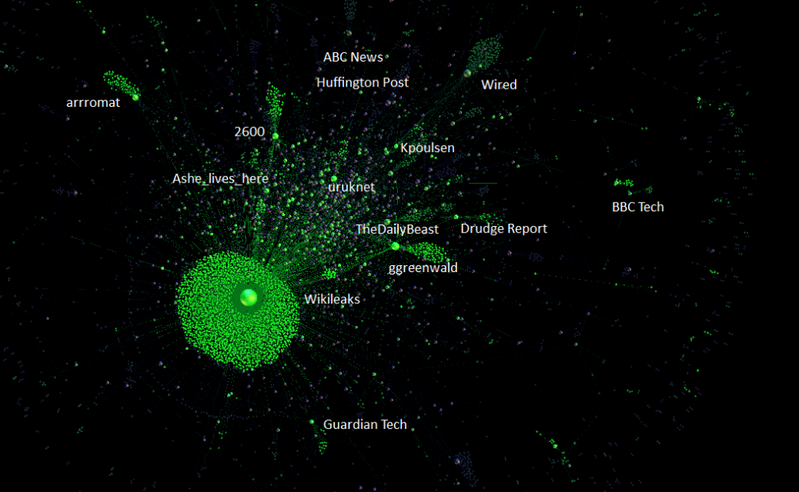

The Wikileaks Saga continues, and now the Internet group Anonymous–which originated as a self-organized campaign against The Church of Scientology and matured (some say splintered) into a rights-oriented hacktivist group with the rise of Why We Protest (notable for running campaigns during the Green Revolution in Iran)–has begun a series of DDOS attacks against government and corporate entities that they deem to be enemies of Wikileaks (including, today, MasterCard, VISA and PayPal). Interestingly the Wikileaks network, as seen from Twitterfeeds, is quite rarefied:

Effectively the origin of Wikileaks, with connections to Hacker and tech communities, makes it sustainable. It demonstrated that resilience through the use of mirror sites and multiple domains after Swiss Bank Julius Baer won a court ruling to block it. However, this resilience does not result in integration into the mainstream. Instead, Wikileaks has created a relatively small world of interconnected clusters, users, and sites. As important as resilience is, only when ideas can diffuse across bridges, from one network to the next, will Wikileaks achieve truly large-scale impact.
According to Fisher, though, the network is sorely lacking in connections outside the digerati, and will have a hard time gaining mainstream support and (positive) visibility.
Update: I keep being asked how the distributed denial of service (DDOS) is being performed. It’s a tool called Low Orbit Ion Cannon and it is a network denial-of-service and opt-in botnet in a box. The lack of programming ability required to take part in these protests is the reason why the practitioners are pejoratively known as “script kiddes”, since they’re only running scripts written by others, who are presumably more esteemed.